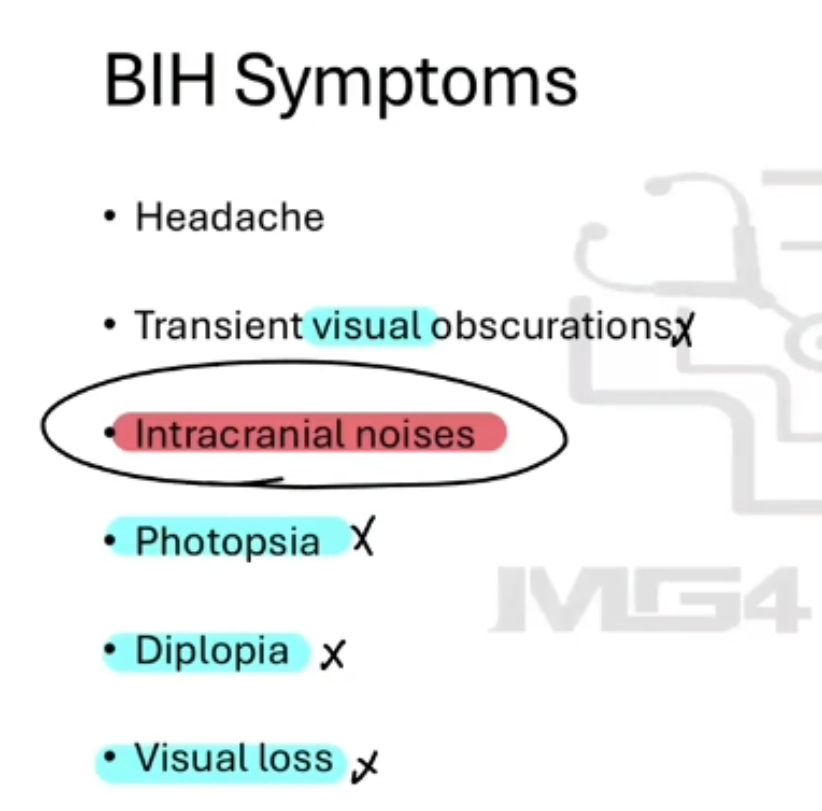

Benign Intracranial Hypertension (Idiopathic Intracranial Hypertension) - Paediatric Headache
Source: Dr. Amir workshop — Med workshop 2 - 2026 / CLASS 1 HEADACHE (Aug 2026 drop) · Specialty: neurology
Scenario
Originally an online-exam case. A parent presents on behalf of their daughter (Samantha) with several weeks of headache that is not improving. Because it is paediatric, haemodynamic stability is framed around the child, and the worried parent needs a warm response to their concern before proceeding to a full SIQORAA.
Pain Characteristics (SIQORAA) and School Performance
Complete SIQORAA (the case is deliberately vague, so findings may be non-specific): site (one side vs both), intensity, quality (throbbing vs dull is the key point), onset, timing (on/off vs constant, worsening), radiation, and alleviating/aggravating factors. In paediatrics, always ask about school performance — a sudden drop can indicate a brain problem.
Differential and Vision Probing
If SIQORAA is non-specific, list a differential: brain tumour (classic paediatric tumour = early-morning vomiting, blurred vision, full red-flag pack), migraine, tension headache, infections, trauma/ICH, medication-overuse headache/BIH, eye problems (red/watery eye rather than glaucoma), and cervicogenic headache. Because a whole package of vision problems can occur, be specific: ask about double vision and buzzing/intracranial noises (tinnitus-like).
Characteristics of BIH (Pseudotumour Cerebri)
BIH mimics a tumour: many tumour red flags but a normal MRI, with papilloedema on fundoscopy. Typical patient: young, mildly overweight female. Features: headache plus a large pack of vision problems, nausea, and papilloedema from raised intracranial pressure. Precipitating medications: tetracyclines (top of the list), OCPs, steroids and vitamin A/isotretinoin. Murtagh describes a diagnostic triad of a young overweight woman with headache, visual changes and nausea. Intracranial noises (a buzzing sound) may be reported.
Examination and Diagnosis
On examination: mildly elevated blood pressure, obesity/high BMI, normal neurological examination. Fundoscopy is often not provided (to avoid giving away papilloedema, and because fundoscopy is hard in children). Diagnosis: benign intracranial hypertension / pseudotumour cerebri — raised pressure of the brain fluid causing headache. Reasons: a young overweight patient with chronic headache, on acne medication that triggers BIH, with mildly raised BP and no features of other conditions. Differentials: brain tumour (normal neurological exam), migraine, tension headache, infections, eye problems (refractive error), cervicogenic headache, trauma/ICH.
Management
Stop the triggering medication first. Monitor symptoms. Consider MRI (not everyone needs it; with no red flags, stop the drug, review, then decide). If symptoms worsen, options include acetazolamide (a carbonic-anhydrase inhibitor). Weight loss helps long-term prevention. Address any psychosocial impact of acne (CBT, relaxation, support). Because the acne medication is stopped, treat acne another way: mild topicals (topical antibiotics, topical retinoids), tetracyclines for about six weeks, OCP or spironolactone in women, or oral isotretinoin/vitamin A under specialist supervision given significant side effects.
Case Figures





🔬 Expert Review & Enhancements
Reviewed by: history-taking-expert (Australian clinical supervisor) · fact-checked against the irStudy medical textbook RAG index.
✏️ Corrections
The preferred current term is idiopathic intracranial hypertension (IIH); 'benign' is discouraged because untreated raised ICP can cause permanent visual loss. Acetazolamide is a carbonic anhydrase inhibitor (reduces CSF production) - it has weak diuretic action but is used here for its CSF-lowering effect, not as a diuretic per se.
IIH management must include urgent formal visual fields and fundoscopy/optic-disc assessment (ophthalmology referral), because progressive papilloedema threatens permanent vision. Fulminant IIH with visual loss may require CSF diversion (shunt) or optic nerve sheath fenestration - beyond stopping the drug and acetazolamide.
⭐ Suggested Enhancements
🏷️ Metadata
📚 Reference Citations (RAG)
John Murtagh General Practice, 8th Edition.pdf p.80 (p229) qdrant:c4c0c7c3-11ce-41ad-b015-a13ca14f48ba
Churchills_Pocketbook_of_Differential_Diagnosis (1).pdf p.94 (p107) qdrant:efd77015-7c3e-4212-8a60-24109fecf13b
John Murtagh General Practice, 8th Edition.pdf p.index (p3614) qdrant:058f9e82-d886-453b-9e2e-c5c6bd699d07